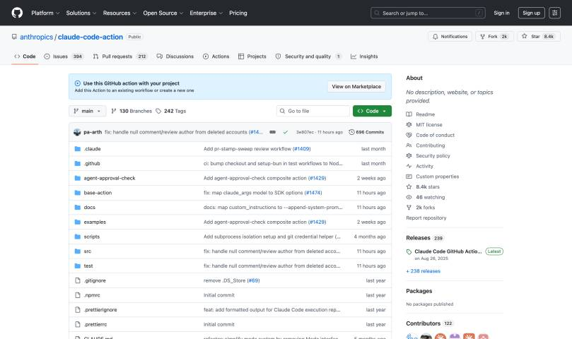
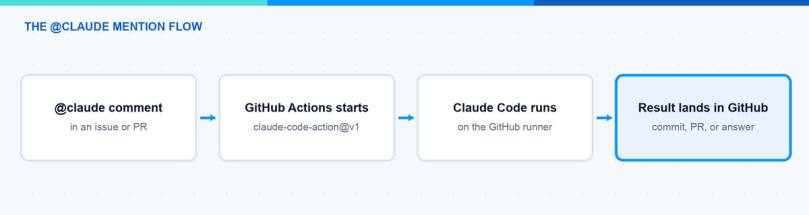
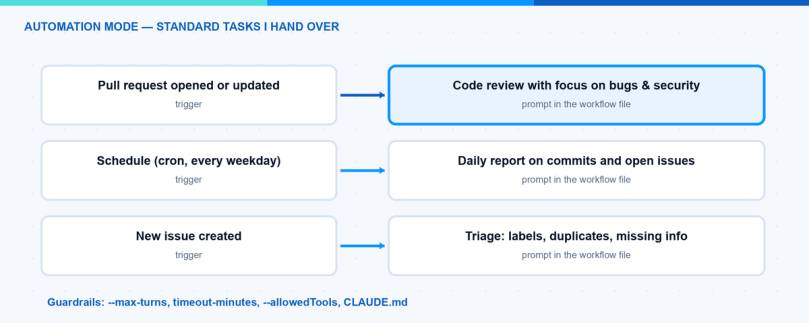

Topic of this page: Claude Code GitHub Actions: Easy Setup in 15 Minutes
Most of us use AI coding agents interactively: you sit in the terminal, type a prompt, and watch the agent work. But a lot of the work in a repository is not interactive at all. Reviewing pull requests, triaging new issues, writing release notes, updating documentation — these are standard tasks that repeat every week. In this blog post I show you how to run Claude Code inside your GitHub pipelines with Claude Code GitHub Actions, so these tasks run automatically while you do something else.
What is the Claude Code GitHub Action?
Claude Code GitHub Actions is the official way to run the Claude Code agent inside a GitHub Actions workflow. The action is called anthropics/claude-code-action and the current version is @v1. Under the hood it starts the same agent you know from the terminal — but on a GitHub-hosted runner, with access to your repository. It is built on the Claude Agent SDK, so everything the agent can do locally (read code, run commands, push commits, open pull requests) also works in the pipeline.
The action works in two modes, and since v1 it detects the right one automatically:
- Interactive mode: Claude responds when someone mentions
@claudein an issue or pull request comment. You write “@claude fix the TypeError in the dashboard component” and Claude analyzes the code, pushes a fix, and answers in the thread. You can change the trigger word with thetrigger_phraseinput. - Automation mode: You give the action a
promptin the workflow file. Then it runs immediately when the workflow triggers — on every pull request, on a schedule, or on any other GitHub event. This is the mode for standard tasks.
Note: Your code stays on the GitHub runners. The action sends the relevant context to the Claude API, but there is no third-party service in between.
How do I set it up?
The setup is genuinely simple. If you have Claude Code in the terminal, one command does almost everything:
- Open Claude Code in a checkout of your repository and run
/install-github-app. - The command installs the Claude GitHub App on the repository. The app needs read and write permissions for Contents, Issues, and Pull requests. You must be a repository admin for this step.
- The command then adds the workflow file and asks for your Anthropic API key, which it stores as the repository secret
ANTHROPIC_API_KEY. - Test it: open an issue and write a comment with
@claude— for example “@claude explain what this repository does”.

If you prefer the manual way, install the app from github.com/apps/claude, add the ANTHROPIC_API_KEY secret yourself, and copy the example workflow into .github/workflows/. The minimal workflow for the mention mode looks like this:
name: Claude Code
on:
issue_comment:
types: [created]
pull_request_review_comment:
types: [created]
jobs:
claude:
runs-on: ubuntu-latest
steps:
- uses: anthropics/claude-code-action@v1
with:
anthropic_api_key: ${{ secrets.ANTHROPIC_API_KEY }}
# Responds to @claude mentions in comments
Hint: Never write the API key directly into the workflow file. Always use a GitHub secret. This sounds obvious, but it is the most common mistake I see in shared workflow examples.
Note: The quick setup only works with a direct Claude API key. If your company runs Claude through Amazon Bedrock or Google Cloud, the action supports that too — you authenticate the runner with OIDC (no stored cloud keys) and set use_bedrock: "true" or use_vertex: "true". The official guide has complete workflow examples for both.

How can I automate standard tasks?
The mention mode is nice, but the real value of Claude Code GitHub Actions is the automation mode. When you set the prompt input, the agent runs without any human trigger. Three examples that I find useful in practice:
1. A review on every pull request. This is a complete workflow file — copy it to .github/workflows/claude-review.yml and it works:
name: Claude Code Review
on:
pull_request:
types: [opened, synchronize]
jobs:
review:
runs-on: ubuntu-latest
timeout-minutes: 15
steps:
- uses: anthropics/claude-code-action@v1
with:
anthropic_api_key: ${{ secrets.ANTHROPIC_API_KEY }}
prompt: |
Review this pull request. Focus on bugs, security issues
and missing error handling — not on code style.
Post the findings as a comment on the pull request.
claude_args: |
--model claude-sonnet-5
--max-turns 10
Three things to notice: timeout-minutes is the hard stop against runaway jobs, --max-turns 10 limits how long the agent iterates (10 is also the default), and --model pins the model. I use Claude Sonnet 5 (claude-sonnet-5) here because it is fast and strong at code review; for the hardest tasks you can switch to Claude Opus 4.8 (claude-opus-4-8), and for cheap high-volume jobs like labeling there is Claude Haiku 4.5 (claude-haiku-4-5).
2. A scheduled report. With a cron trigger, Claude summarizes what happened in the repository — every morning, without anyone asking:
on:
schedule:
- cron: "0 7 * * 1-5"
...
prompt: "Summarize yesterday's commits and the open issues. Post the summary as a new issue titled 'Daily report'."
3. Issue triage. Trigger on issues: [opened] and let the prompt label the issue, check for duplicates, and ask the reporter for missing information. New issues arrive pre-sorted.
The claude_args input passes any Claude Code CLI argument into the run. The ones I actually use: --max-turns to limit how long the agent works, --model to pick the model, and --allowedTools to restrict what the agent may do. The prompt input also accepts skill invocations like /skill-name, so you can package your team’s process as a skill in .claude/skills/ and run exactly that process in the pipeline — just add an actions/checkout step before the action so the skill files are on the runner.

What is the difference between the two modes?
| Interactive (@claude mention) | Automation mode (prompt) | |
|---|---|---|
| Trigger | A human writes @claude in a comment | Any GitHub event: PR, schedule, issue |
| Prompt | Comes from the comment text | Fixed in the workflow file |
| Best for | Ad-hoc questions and fixes | Recurring standard tasks |
| Human in the loop | Yes, per request | Only when reviewing the result |
What should I know about costs and guardrails?
Every run consumes GitHub Actions minutes and Claude API tokens. A few things keep this under control:
- Set
--max-turns(the default is 10). Without a sensible limit, a confused agent can iterate for a long time. - Set a workflow timeout with
timeout-minuteson the job. This is your hard stop against runaway jobs. - Use a
CLAUDE.mdin the repository root. Claude reads it in every run — coding standards, review criteria, and project rules belong there, not in every prompt. - Restrict tools with
--allowedToolswhen a workflow only needs to read. A triage workflow does not need to push commits. - Use concurrency controls. GitHub’s
concurrencysetting prevents five parallel Claude runs when someone pushes five commits in a row. - Review before merge. I treat Claude’s pull requests like a colleague’s pull requests. The agent is good, but the responsibility stays with you.
Note: In enterprise-managed GitHub organizations, a policy often blocks Actions from creating pull requests (“GitHub Actions is not permitted to create or approve pull requests”). I ran into this with one of my own automation projects. The fix is either an admin enabling that setting, or using a custom GitHub App token via github_token instead of the default Actions token.
Where does this fit in the bigger picture?
For me this is the same shift I described in why CLI tools are beating MCP for AI agents: the agent becomes a normal building block in your existing tooling. A pipeline step that thinks is still just a pipeline step — it has a trigger, a budget, and a log. If you want to see how skills, MCP and CLI tools relate to each other, I mapped that out in my AI tooling overview.
My recommendation: start with the mention mode, because it is one command to set up and immediately useful. Then pick one standard task that annoys you every week — for me it was pull request triage — and move it to automation mode. The full documentation is in the official Claude Code GitHub Actions guide.
I hope this is a little help.
Stay healthy, Cheers Jannik